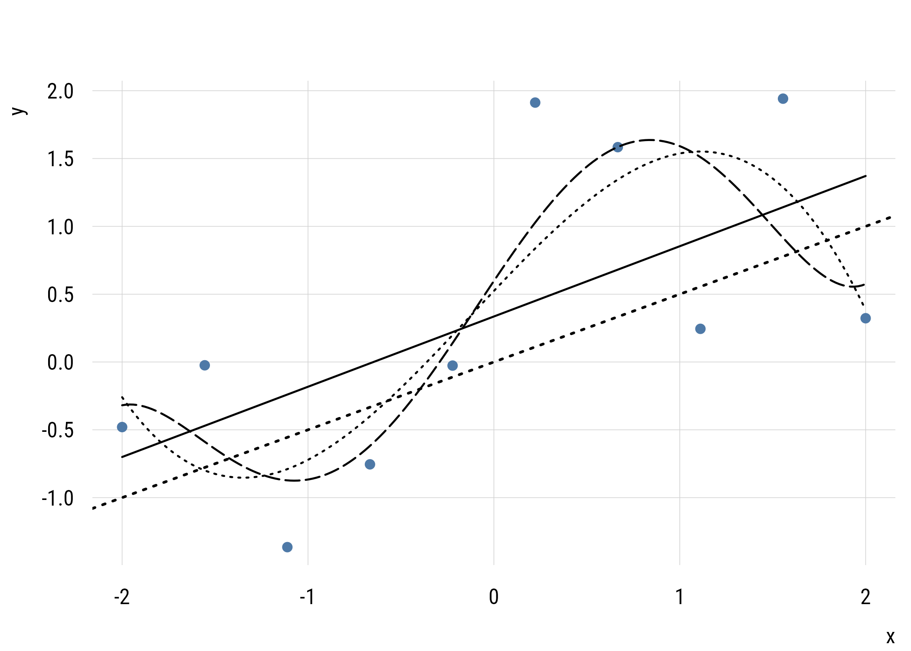
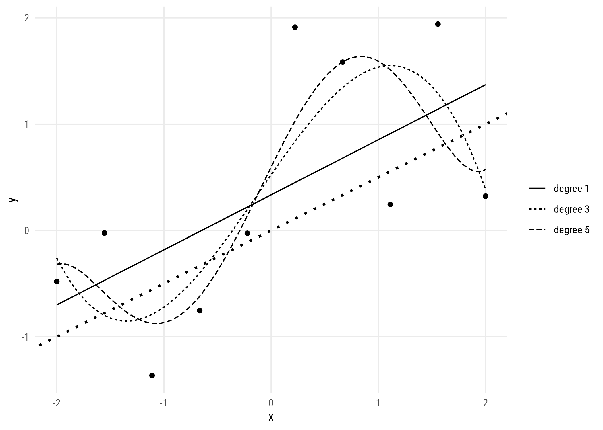
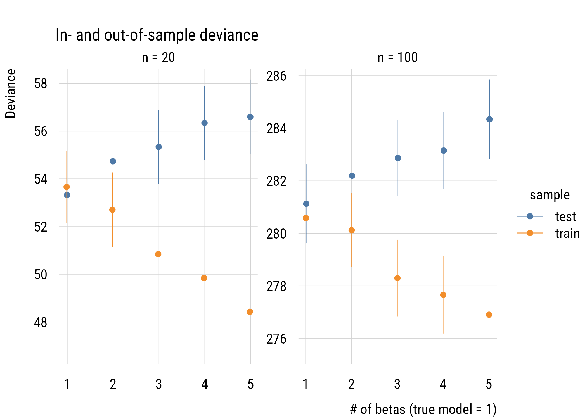
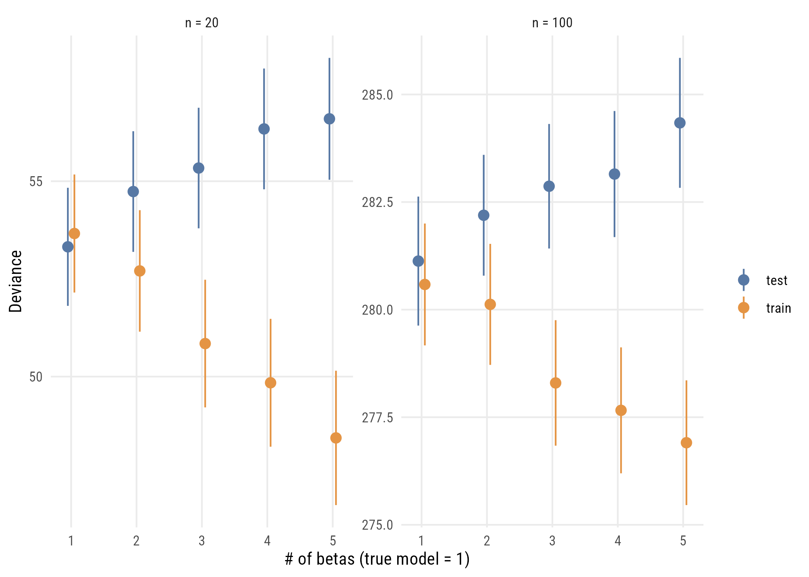
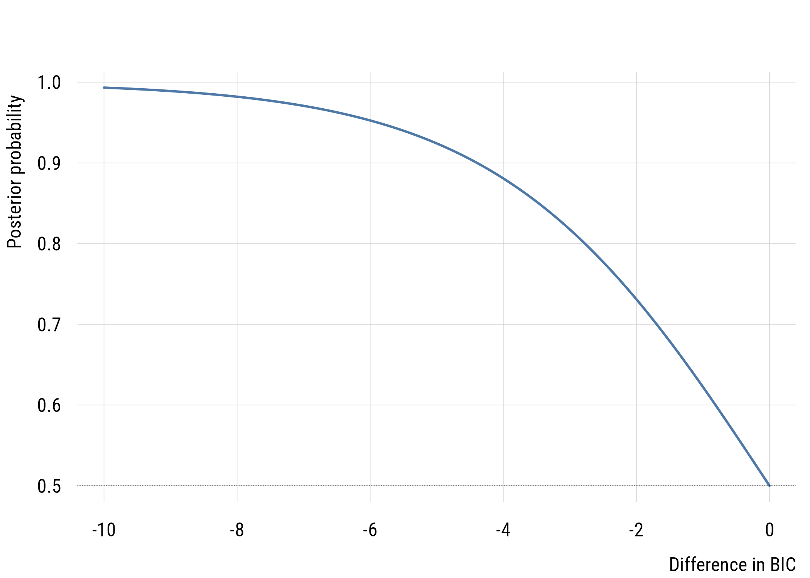
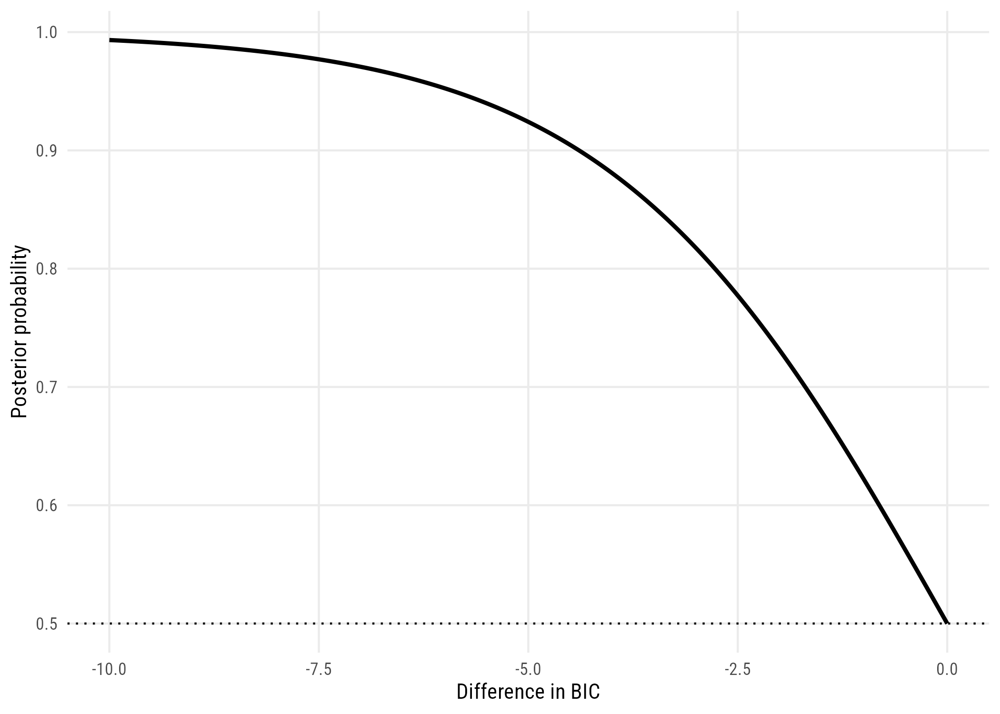

states <- as.data.frame(state.x77) |>
rename(life_exp = `Life Exp`, hs_grad = `HS Grad`)10 Comparing models
As we’ve seen so far, one of the problems in choosing a model is that more complicated models will always get at least a little closer to the data. So we can’t simply choose the model with the lowest RSS or deviance. This is the core problem of model selection.
All of the approaches we’ve seen so far (i.e., \(t\)-test, \(F\)-test, likelihood ratio test) control the Type I error rate, or probability of a false positive. That is, they limit the probability we claim something is true when it actually isn’t. This is the meaning of setting \(\alpha\) to, say, .05.
In this section, we’re going to look at approaches to model selection that are not based on null hypothesis significance testing.
10.1 AIC
The AIC or Akaike’s Information Criterion is not a null hypothesis test in the way that, say, the likelihood ratio test is. It’s rather a way of evaluating which of two models would do a better job predicting a different dataset that was created by the same data-generating process.
10.1.1 Definition
The formula is:
\[\text{AIC} = D + 2k\]
where \(D\) is the deviance and \(k\) is the number of estimated parameters (e.g., 3 for a simple regression).
The AIC decision rule is that we want to, when comparing two models, take the model with the lower AIC. In practice, it’s really that simple. But let’s talk about why.
The logic is that we want \(D\) to go down, but not at the expense of adding a bunch of junk parameters. So there’s a penalty for adding additional betas. Adding a new parameter needs to make the deviance go down by at least 2 for the model to be considered better.
10.1.2 Motivation: out-of-sample prediction
Consider the following simulated data, which is based on this model:
\[\begin{align} Y_i &\sim \mathcal{N}(\mu_i, 1) \\ \mu_i &= 0 + .5X_i \end{align}\]
Now let’s look at a finite sample from this process.
set.seed(522)
x <- seq(-2, 2, length.out = 10)
y <- 0 + 0.5 * x + rnorm(10, mean = 0, sd = 1)
demo <- data.frame(x, y)
grid_x <- data.frame(x = seq(-2, 2, length.out = 200))
for (k in 1:5) {
grid_x[[paste0("fit", k)]] <- predict(lm(y ~ poly(x, k), data = demo),
newdata = grid_x)
}We want to do better if we can, so maybe we should make the model more complicated? Here’s us trying to use more and more complex models (i.e., higher degree polynomials) to improve the fit.
plt(y ~ x, data = demo, type = "p", pch = 19,
ylim = range(c(demo$y, grid_x$fit5)),
xlab = "x", ylab = "y")
abline(0, 0.5, lty = 3, lwd = 2)
for (k in c(1, 3, 5)) {
lines(grid_x$x, grid_x[[paste0("fit", k)]], lwd = 1.5, lty = k)
}
long <- map(c(1, 3, 5), \(k)
data.frame(x = grid_x$x, fit = grid_x[[paste0("fit", k)]],
degree = paste("degree", k))) |>
list_rbind()
ggplot(demo, aes(x = x, y = y)) +
geom_point() +
geom_abline(intercept = 0, slope = 0.5, linetype = "dotted", linewidth = 1) +
geom_line(data = long, aes(y = fit, linetype = degree)) +
labs(x = "x", y = "y", linetype = "")
The polynomials end up “chasing” weird data points in ways that actually make our true understanding worse. This is called overfitting and it’s the main reason we don’t want to make models too complicated.
In sample, it looks like progress:
data.frame(
degree = 1:5,
RSS = map_dbl(1:5, \(k) round(deviance(lm(y ~ poly(x, k), data = demo)), 3)),
R2 = map_dbl(1:5, \(k) round(summary(lm(y ~ poly(x, k), data = demo))$r.squared, 3))
) degree RSS R2
1 1 7.266 0.376
2 2 6.992 0.399
3 3 4.510 0.612
4 4 4.472 0.616
5 5 4.133 0.64510.1.3 Why 2 times k?
The number “2” in the AIC formula isn’t arbitrary. It’s because adding extra parameters is expected to make the deviance worse out of sample at precisely the rate of two per “extra” parameter.
Here’s a simulation based loosely on the one in Richard McElreath’s Statistical Rethinking. The steps are:
- Draw a sample of size N from a known process (the same as the model above); call this the training set. We do this at two sample sizes, N = 20 and N = 100.
- Estimate a series of regression models on the training set, ranging from a linear model to a 5th degree polynomial.
- Assess how well these models predict another data set of the same N drawn from the same process.
get_tt_devs <- function(n, b0, b1, s, k) {
x <- seq(-2, 2, length = n)
y <- b0 + b1*x + rnorm(n, 0, s)
fit <- lm(y ~ poly(x, k))
ll_train <- as.numeric(-2 * logLik(fit))
test_y <- b0 + b1*x + rnorm(n, 0, s)
pred_y <- predict(fit)
test_fit <- lm(test_y ~ pred_y)
ll_test <- as.numeric(-2 * logLik(test_fit))
tibble::tibble(
train = ll_train,
test = ll_test)
}
set.seed(1234)
mysims <- expand_grid(
simnum = 1:1000,
k = 1:5,
n = c(20, 100)
)
mysims <- mysims |>
rowwise() |>
mutate(outs = list(get_tt_devs(
n = n, b0 = 0, b1 = .5, s = 1, k = k))) |>
unnest_wider(outs) |>
group_by(k, n) |>
summarize(
across(
c(train, test),
list(mean = mean, sd = sd),
.names = "{.col}_{.fn}"),
.groups = "drop") |>
pivot_longer(
cols = -c(k, n),
names_to = c("sample", ".value"),
names_sep = "_") |>
mutate(ymax = mean + sd/sqrt(n),
ymin = mean - sd/sqrt(n),
nfac = ordered(n, labels = c("n = 20", "n = 100")))plt(mean ~ k | sample,
data = mysims,
ymin = ymin,
ymax = ymax,
type = type_pointrange(dodge = .01),
main = "In- and out-of-sample deviance",
ylab = "Deviance",
xlab = "# of betas (true model = 1)",
facet = nfac,
facet.args = list(free = TRUE))
ggplot(mysims, aes(x = k, y = mean, color = sample)) +
geom_pointrange(aes(ymin = ymin, ymax = ymax),
position = position_dodge(width = 0.2)) +
facet_wrap(~ nfac, scales = "free_y") +
labs(x = "# of betas (true model = 1)", y = "Deviance", color = "")
Increasingly complex models do an increasingly good job of fitting the training (in-sample) data but an increasingly bad job of fitting the test (out-of-sample) data. The size of that penalty is the point:
mysims |>
select(k, nfac, sample, mean) |>
pivot_wider(names_from = sample, values_from = mean) |>
mutate(gap = round(test - train, 2)) |>
select(k, nfac, gap) |>
pivot_wider(names_from = nfac, values_from = gap)# A tibble: 5 x 3
k `n = 20` `n = 100`
<int> <dbl> <dbl>
1 1 -0.34 0.54
2 2 2.03 2.07
3 3 4.49 4.57
4 4 6.5 5.49
5 5 8.17 7.43At the true model (\(k = 1\)) the gap is essentially zero, and every extra parameter adds about 2 deviance units out of sample. This is why the AIC’s penalty is \(2k\).
10.1.4 Implied p-value
If we’re considering two models, one more complicated and one less complicated, we can think about the implied p-value of the comparison. That is, we can ask what the p-value would be to make the same decision of rejecting the simpler model.
1 - pchisq(2, df = 1)[1] 0.1572992As we see here, the implied p-value for a one-parameter comparison is much more “liberal” than any p-value that one would choose.
10.1.5 Example use
Let’s do a very simple model comparison using AIC.
mod_c <- lm(life_exp ~ 1, data = states)
mod_a <- lm(life_exp ~ hs_grad, data = states)
c(AIC_c = AIC(mod_c), AIC_a = AIC(mod_a)) AIC_c AIC_a
174.3291 155.6309 As you can see, AIC prefers the model that conditions our expectations of life_exp on hs_grad.
Now turn AIC loose on the overfitting demo, where we know the true model is the straight line:
data.frame(
degree = 1:5,
AIC = map_dbl(1:5, \(k) round(AIC(lm(y ~ poly(x, k), data = demo)), 2))
) degree AIC
1 1 31.19
2 2 32.80
3 3 30.42
4 4 32.33
5 5 33.54AIC stops the runaway that RSS could not, and rates degrees 2, 4, and 5 worse than the straight line. But it prefers degree 3, which is wrong. With ten observations and noise as large as the signal, no criterion can reliably identify a true model. AIC is a better guide than in-sample fit.
10.2 BIC
The BIC or Bayesian Information Criterion is like the AIC, but different. In practice, it’s the same as the AIC except with a larger penalty term. It also gets used in the same basic way: take the model with the lower BIC.
10.2.1 Definition
\[\text{BIC} = D + k\log n\]
Whereas the AIC always has a penalty term of two times the number of parameters, the BIC has a penalty term that’s the natural log of the sample size times the number of parameters. So for a regression on a model with N = 300, adding an additional parameter would have to decrease the deviance by more than 5.7 for that to be considered an improvement.
10.2.2 Motivation: identifying the true model
Whereas the AIC’s motivation is to approximate out-of-sample prediction, the BIC’s goal is to figure out which of the models that we’re considering is most likely to be the “true model” that generated the data.1 (Of course that assumes that the true model is in the set that we’re considering, which is usually unlikely.)
1 I’m not going to do full justice to the BIC here. If you want to know more, see Adrian Raftery’s classic paper “Bayesian Model Selection in Social Research”. It is worth taking the time to read.
10.2.3 Why k log n?
The different penalty term comes here because the BIC is set up to do a different job. The difference between two models’ BICs is a large-sample approximation to a Bayes’ Factor (BF). The BF is how much more likely one model is compared to another. So if, say, the BF of \(M_1\) vs. \(M_0\) is 4, that means that \(M_1\) is four times more likely to be the true model. If those are the only two models we are considering, then \(M_1\) has an 80% chance of being the true model.
We can convert the difference between two BICs into a BF2 as follows:
2 This formula (and this whole section) assumes we have no prior preference for either model before looking at the data. That’s not something we’re going to discuss further here. But go read the paper!
\[\text{BF}_{10} = \exp \left( -\frac{1}{2} \Delta \text{BIC} \right)\]
And if we’re only considering two models, we can convert Bayes’ factors into posterior probabilities as follows:
\[P(M_1 | \text{data}) = \frac{\text{BF}_{01}}{1 + \text{BF}_{01}}\]
delta_bic <- seq(-10, 0, by = 0.01)
bayes_factor <- exp(-0.5 * delta_bic)
posterior <- bayes_factor / (1 + bayes_factor)plt(posterior ~ delta_bic, type = "l", lwd = 2,
xlab = "Difference in BIC", ylab = "Posterior probability")
abline(h = 0.5, lty = 3)
ggplot(data.frame(delta_bic, posterior), aes(x = delta_bic, y = posterior)) +
geom_line(linewidth = 1) +
geom_hline(yintercept = 0.5, linetype = "dotted") +
labs(x = "Difference in BIC", y = "Posterior probability")
data.frame(
delta_BIC = c(0, -2, -6, -10),
bayes_factor = round(exp(-0.5 * c(0, -2, -6, -10)), 1),
posterior = round(exp(-0.5 * c(0, -2, -6, -10)) /
(1 + exp(-0.5 * c(0, -2, -6, -10))), 3)
) delta_BIC bayes_factor posterior
1 0 1.0 0.500
2 -2 2.7 0.731
3 -6 20.1 0.953
4 -10 148.4 0.993Based on these, you can see that BIC differences of 10 or more are very strong evidence that one model is a much better fit than the other.3
3 Of course, you need to make sure that any models you compare are reasonable candidates. For example, models where the future predicts the past might be a great fit to the data, but they should never be estimated in the first place! So things like the AIC and BIC don’t in any way exempt you from having to think scientifically.
10.2.4 Implied p-values
As discussed above, we don’t use AIC and BIC to control Type I error like we do for null hypothesis tests. Nevertheless, here are the p-values implied by the “take the lower” BIC decision rule, for a one-parameter comparison at different sample sizes.
data.frame(
n = c(20, 50, 100, 1000, 2000),
deviance_drop_needed = round(log(c(20, 50, 100, 1000, 2000)), 2),
implied_p = round(1 - pchisq(log(c(20, 50, 100, 1000, 2000)), df = 1), 4)
) n deviance_drop_needed implied_p
1 20 3.00 0.0835
2 50 3.91 0.0479
3 100 4.61 0.0319
4 1000 6.91 0.0086
5 2000 7.60 0.0058In all these cases, it’s easy to see that using the BIC as a model selection decision rule is functionally equivalent to choosing a much smaller \(\alpha\) level than is conventional in social and behavioral science. For that reason, I think it’s a good choice for self-discipline.
10.2.5 Example use
In R, getting the BIC is just as easy as getting the AIC.
c(BIC_c = BIC(mod_c), BIC_a = BIC(mod_a)) BIC_c BIC_a
178.1532 161.3670 In this case it’s very clear that if we’re choosing between these models as “true model” candidates, the model that conditions on hs_grad is preferred.
10.3 Concluding thoughts
AIC and BIC are useful ways to think about model selection without having to commit either to full null-hypothesis significance testing (which has some issues, especially when you think about it) or to full Bayesian statistics (which is pretty complex for beginners).
These approaches have another advantage, which is that we can use them to compare non-nested models. All the models we’ve seen so far have been nested, which means the simpler model is a subset of the more complex model. You can only use \(F\) tests and LRTs to compare nested models.
Suppose you want to know whether life expectancy is better described by graduation rates or by the murder rate. Neither model contains the other.
by_grad <- lm(life_exp ~ hs_grad, data = states)
by_murder <- lm(life_exp ~ Murder, data = states)
data.frame(
model = c("graduation", "murder"),
AIC = round(c(AIC(by_grad), AIC(by_murder)), 1),
BIC = round(c(BIC(by_grad), BIC(by_murder)), 1)
) model AIC BIC
1 graduation 155.6 161.4
2 murder 129.3 135.0An F test cannot compare these. The murder-rate model has the lower AIC and BIC by a wide margin, and information criteria are the only tool in this book that can tell us so.
ImportantWhat these numbers can and cannot do
The values mean nothing on their own. An AIC of 155 is neither good nor bad. Only differences between models fitted to the same data carry information.
The same data means exactly that. Two models fitted to different numbers of rows, because one has a predictor with more missing values, cannot be compared.
There is no test here. No p-value, no threshold, no rejection. A gap of 0.4 is not meaningfully different from a tie.
10.4 Recap
- more parameters always improve in-sample fit, so fit alone cannot select a model
- overfitting means chasing weird data points in ways that make our understanding worse
- AIC \(= D + 2k\) approximates out-of-sample prediction
- the 2 is there because extra parameters cost about two deviance units apiece out of sample
- BIC \(= D + k\log n\) has a bigger penalty and a different goal, identifying the true model
- BIC differences approximate Bayes factors and posterior model probabilities
- BIC is functionally equivalent to a much smaller \(\alpha\) than is conventional, which makes it a good choice for self-discipline
- only information criteria can compare non-nested models